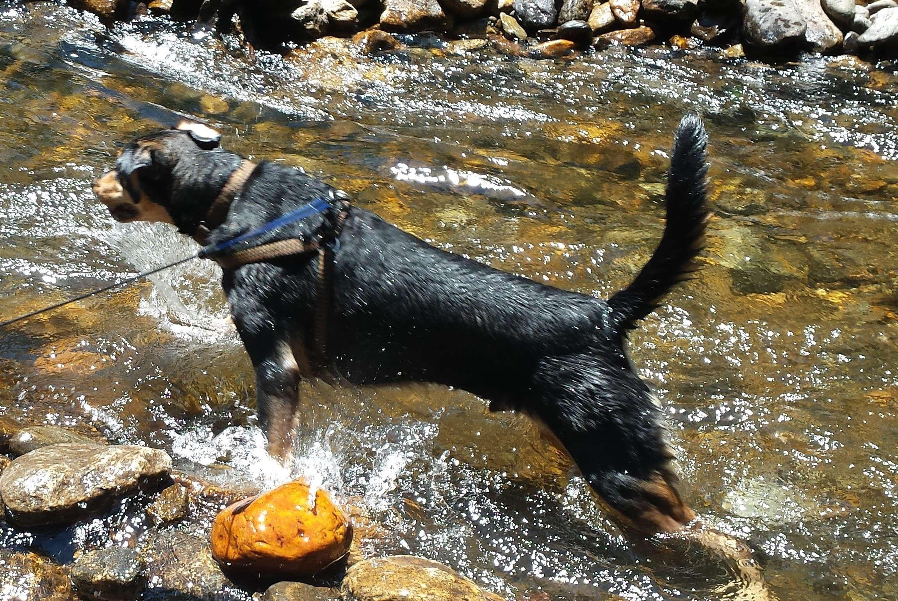

Welcome to the Weekly Wag
A website designed for dogs owners all around the world.
Dog owners want to feel close to their dogs, and we at the Weekly Wag want to help. We update our website on a regular basis to give you facts and answers to help you have a healthy and happy dog.
One tab over, we have a the Good Boy Of The Week, where dog owners can share their dogs with all of us. Our current G.B.O.T.W. is Otto (right). We also have a forums page where you can talk to other dog owners and we have a contacts page to contact us.